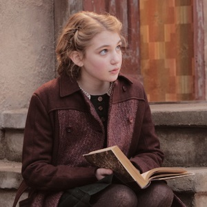

Death
 The Book Thief is a novel with a unique narrative style. After all, the narrator in The Book Thief is Death.
Yes, Death.
Death is omnipresent, watching but not interfering in the lives of those caught in the turmoil of Nazi Germany.
It's a unique perspective that not only sets the dark tone for the novel but also invites readers to consider the fragility
of life and the inevitability of death. Death is characterized as caring too much and not at all at the same time, which
works so well with the story as a whole.
The way Death describes the events of the story is both haunting and beautiful, as it reflects on the events of the story from, not
one perspective, but many. Death is a passive observer, allowing the events to unfold without interference. He also makes
important observations about the human condition, the nature of suffering, and the power of words. His non-human-ness
allows him to see the world in a way that humans cannot. One of his famous quotes from the novel is:
"I am haunted by humans" (see QUOTES for more!).
The Book Thief is a novel with a unique narrative style. After all, the narrator in The Book Thief is Death.
Yes, Death.
Death is omnipresent, watching but not interfering in the lives of those caught in the turmoil of Nazi Germany.
It's a unique perspective that not only sets the dark tone for the novel but also invites readers to consider the fragility
of life and the inevitability of death. Death is characterized as caring too much and not at all at the same time, which
works so well with the story as a whole.
The way Death describes the events of the story is both haunting and beautiful, as it reflects on the events of the story from, not
one perspective, but many. Death is a passive observer, allowing the events to unfold without interference. He also makes
important observations about the human condition, the nature of suffering, and the power of words. His non-human-ness
allows him to see the world in a way that humans cannot. One of his famous quotes from the novel is:
"I am haunted by humans" (see QUOTES for more!).
Liesel Meminger

Liesel Meminger is the protagonist of The Book Thief.
She is a young girl who is sent to live with foster parents in Molching, Germany,
during World War II. Shy at first, but determined to learn how to read,
Liesel grows into a strong and resilient young girl, and eventually gains mastery of the words she
so longed to learn. The story starts when she is the age of nine, and follows her journey through the war,
ending when she's around fourteen. Growing up with Liesel (and her best friend Rudy) throughout
the book can remind even older readers of the beauty and innocence of childhood, while
giving appreciation for the struggles that children faced during this time, especially in
Nazi-controlled Germany.